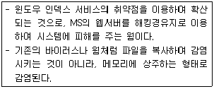

인터넷보안전문가-2급 (2002-10-20 기출문제)
1과목: 정보보호개론
1. 다음 중 정보보호 관련 법령에 위반 되어 법적 제제를 받을 수 있는 것은?
- 웹 서비스를 통한 회원 등록시 회원 관리를 위한 회원 동의를 거친 개인 정보 기록
- 불필요한 전자 메시지류의 전자 우편 수신 거부
- 웹 서비스 업체에 회원 등록시 불성실한 개인 정보 등록
- 동의를 받지 않은 친구의 신용카드를 이용하여 전자 상거래에서 전자 결재
(정답률: 알수없음)

2. 정보통신 윤리위원회의 불건전 정보 심의 기준으로 짝지워지지 않은 것은?
- 반국가적인 내용, 법과 질서와 존엄성을 저해하는 내용
- 시민 단체 비방 내용, 경로효친 사상 위배 내용
- 비과학적인 생활 태도 조장, 신앙의 자유에 반하는 내용
- 의약품 등의 오남용 조장, 불건전 오락물 등의 내용
(정답률: 알수없음)
3. 보안의 4대 요소에 속하지 않는 것은?
- 기밀성
- 무결성
- 확장성
- 인증성
(정답률: 알수없음)
4. IP 계층에서 보안 서비스를 제공하기 위한 IPsec에서 제공되는 보안 서비스가 아닌 것은?
- 부인방지 서비스
- 무연결 무결성 서비스
- 데이터 원천 인증
- 기밀성 서비스
(정답률: 알수없음)
5. 전자문서의 신뢰성을 보장하기 위한 전자서명법의 주요 내용이 아닌 것은?
- 공인 인증기관의 지정 기준, 인증업무준칙, 인증 업무의 휴지 등에 관한 사항
- 인증서의 발급, 효력 정지, 폐지에 관한 사항
- 비공인 인증기관의 지정 기준, 인증업무준칙 등의 제반 필요사항
- 전자 서명 생성키의 관리 등의 인증 업무의 안전과 신뢰성을 확보하기 위한 사항
(정답률: 알수없음)
6. 인증 서비스를 제공하기 위한 공개키 인증서(Public-key Certificate)에 포함되어 있지 않은 내용은?
- 가입자의 이름
- 가입자의 전자서명 검증키(공개키)
- 인증서의 유효기간
- 가입자의 주민등록번호, 거주 주소, 전화번호 등의 개인정보
(정답률: 알수없음)
7. 다음 인적자원 중 보안 위협이 상대적으로 높은 인적 자원은?
- 상근 근무자
- 임시 근로자
- 보안 운영자
- 퇴사 예정자
(정답률: 40%)
8. 정보 보호를 위한 컴퓨터실의 보호 설비 대책으로 거리가 먼 것은?
- 컴퓨터실은 항상 남향으로 하고 태양빛이 잘 들게 한다.
- 화재대비를 위해 소화기를 설치하고 벽 내장재를 방화재나 방열재로 내장한다.
- 출입문에 보안 장치를 하고 감시 카메라 등 주야간 감시 대책을 수립한다.
- 컴퓨터실은 항상 일정한 온도와 습도를 유지하게 한다.
(정답률: 알수없음)
9. 전자상거래 보안의 기본원칙이 아닌 것은?
- 신원확인
- 인증
- 개인정보보호
- 전자서명
(정답률: 알수없음)
10. 인터넷 보안과 관련된 용어의 설명으로 틀린 것은?
- 바이러스(Virus) : 어떤 프로그램이나 시스템에 몰래 접근하기 위하여 함정같은 여러 가지 방법과 수단을 마련하여 둔다.
- 웜(Worm) : 자기 스스로를 복사하는 프로그램이며, 일반적으로 특별한 것을 목표로 한 파괴행동은 하지 않는다.
- 트로이 목마(Trojan Horse) : 어떤 행위를 하기 위하여 변장된 모습을 유지하며 코드(Code) 형태로 다른 프로그램의 내부에 존재한다.
- 눈속임(Spoof) : 어떤 프로그램이 마치 정상적인 상태로 유지되는 것처럼 믿도록 속임수를 쓴다.
(정답률: 알수없음)
2과목: 운영체제
11. 리눅스 root 유저의 암호를 잊어버려서 리눅스에서 현재 root 로 로그인을 할 수 없는 상태이다. 리눅스를 재설치하지 않고 리눅스의 root 유저로 다시 로그인할수 있는 방법은?
- 일반유저로 로그인 한 후 /etc/securetty 파일안에 저장된 root 의 암호를 읽어서 root 로 로그인한다.
- LILO프롬프트에서 [레이블명] single로 부팅한 후 passwd명령으로 root 의 암호를 바꾼다.
- 일반유저로 로그인하여서 su 명령을 이용한다.
- 일반유저로 로그인 한 후 passwd root 명령을 내려서 root 의 암호를 바꾼다.
(정답률: 알수없음)
12. netstat -an 명령으로 시스템의 열린 포트를 확인한 결과 31337 포트가 리눅스 상에 열려 있음을 확인하였다. 어떤 프로세스가 이 31337 포트를 열고 있는지 확인 할 수 있는 명령은?
- fuser
- nmblookup
- inetd
- ps
(정답률: 알수없음)
13. 다음중 Server Operators 그룹에 속한 사용자가 수행할 수 없는 권한은?
- 서버의 파일과 프린트 공유를 지정할 수 있다.
- 사용자를 그룹에서 추가하거나 삭제할 수 있다.
- 서버 잠금을 설정하거나 해제할 수 있다.
- 서버의 디스크를 포맷할 수 있다.
(정답률: 알수없음)
14. 다음 중 SSI(Server-side Includes)의 기능이 아닌 것은?
- 접속한 현재 날짜와 시간을 출력한다.
- cgi를 실행시킬 수가 있다.
- 파이어월(FireWall) 기능이 있다.
- 파이어월(FireWall) 기능이 없다.
(정답률: 알수없음)
15. TCP 포트 중 25 번 포트가 하는 일반적인 역할은?
- TELNET
- FTP
- SMTP
- SNMP
(정답률: 알수없음)
16. 다음 중 Windows 2000에서 사용자 계정의 옵션으로 설정할수 있는 항목이 아닌 것은?
- 로그온 시간 제한
- 로그온 할 수 있는 컴퓨터 제한
- 계정 파기 날짜
- 로그온 할 수 있는 컴퓨터의 IP 주소
(정답률: 알수없음)
17. Windows 2000 도메인 로그온 할때 이용되는 절차가 아닌 것은?
- WinLogon
- TAM
- LSA
- SAM
(정답률: 알수없음)
18. 사용자 엑세스에 있어서 로그온 제한에 포함되지 않는 것은?
- 시간 제한
- 워크스테이션 제한
- 계정 제한
- 클라이언트 제한
(정답률: 알수없음)
19. 리눅스에서 사용하는 보안 프로그램인 npasswd 에 대한 설명이 아닌 것은?
- 최소한의 패스워드 길이를 조정할 수 있다.
- /dev/kmem과 다른 디바이스 파일의 읽기/쓰기를 체크할 수 있다.
- 단순한 패스워드를 체크해 낼 수 있다.
- 호스트 이름, 호스트 정보 등을 체크할 수 있다.
(정답률: 알수없음)
20. NTFS의 주요 기능 중 내용이 틀린 것은?
- 파일 클러스터를 추적하기 위해 b-tree 디렉토리 개념을 사용한다.
- 서버 관리자가 ACL을 이용하여 누가 어떤 파일만 액세스할 수 있는지 등을 통제할 수 있다.
- 교체용 디스크와 고정 디스크 모두에 대해 데이터 보안을 지원한다.
- 대·소문자와 유니코드, 128 문자까지의 긴 파일 이름을 지원한다.
(정답률: 알수없음)
21. A 씨는 리눅스 서버내에 로그인 해 있는 사람들과 실시간 채팅을 할수 있는 perl 스크립트를 만들어 chat.pl 이라는 파일로 저장하였다. 하지만 저작권 문제 때문에 소스를 보이지 않고 사람들이 오직 이 스크립트 파일을 실행만 하게 하고 싶다. 어떤 파일 퍼미션을 설정해야 원하는 결과를 얻을수 있겠는가?
- 701
- 777
- 755
- 7⑤
(정답률: 알수없음)
22. 어떤 파일의 허가 모드가 -rwxr---w- 이다. 다음 설명 중 틀린 것은?
- 소유자는 읽기 권한, 쓰기 권한, 실행 권한을 갖는다.
- 동일한 그룹에 속한 사용자는 읽기 권한만을 갖는다.
- 다른 모든 사용자는 쓰기 권한 만을 갖는다.
- 동일한 그룹에 속한 사용자는 실행 권한을 갖는다.
(정답률: 알수없음)
23. 다음이 설명하는 바이러스는?

- VBS/VBSWG.X
- I-Worm/Naked
- Win32/Sircam.worm
- Code_Red
(정답률: 알수없음)
24. 다음 중 리눅스의 특징이라 할 수 없는 것은?
- 연관된 유틸리티의 공존
- TCP/IP 기반의 네트워크 통신 지원
- 컴퓨터 전문가를 위한 특수 운영체제
- 다중 사용자 운영체제
(정답률: 알수없음)
25. 각 사용자의 가장 최근 로그인 시간을 기록하는 로그파일은?
- cron
- messages
- netconf
- lastlog
(정답률: 알수없음)
26. 리눅스에서 침입차단시스템 설정에서, 외부 임의의 호스트에서 210.119.227.226으로 telnet 접속을 막는 규칙을 삽입하기 위한 올바른 iptables 명령어는?
- /sbin/iptables -A INPUT -i eth0 -s 0/0 -d 210.119.227.226 -p tcp --dport telnet -j drop
- /sbin/iptables -A OUTPUT -i eth0 -s 0/0 -d 210.119.227.226 -p tcp --dport telnet -j drop
- /sbin/iptables -A INPUT -i eth0 -s 0/0 -d 210.119.227.226 -p tcp --dport telnet -j accept
- /sbin/iptables -A OUTPUT -i eth0 -s 0/0 -d 210.119.227.226 -p tcp --dport telnet -j accept
(정답률: 알수없음)
27. Windows 2000 서버에서 보안로그에 대한 설명이 아닌 것은?
- 보안 이벤트의 종류는 개체 액세스 제어, 계정 관리, 계정 로그온, 권한 사용, 디렉토리 서비스, 로그온 이벤트, 시스템 이벤트, 정책 변경, 프로세스 변경 등이다.
- 보안 이벤트를 남기기 위하여 감사 정책을 설정하여 누가 언제 어떤 자원을 사용했는지를 모니터링할 수 있다.
- 보안 이벤트에 기록되는 정보는 이벤트가 수행된 시간과 날짜, 이벤트를 수행한 사용자, 이벤트가 발생한 소스, 이벤트의 범주 등이다.
- 데이터베이스 프로그램이나 전자메일 프로그램과 같은 응용 프로그램에 의해 생성된 이벤트를 모두 포함한다.
(정답률: 알수없음)
28. Windows NT 보안 서브시스템(Security Sub-System)의 기능들로 짝지어진 것은?
- 사용자 인증 - 사용자 행동에 대한 감시 및 로그 기록 - 메모리 영역의 비인가된 접근통제
- 사용자 인증 - 도메인에 존재하는 개체의 저장 - 사용자가 소유한 자원에 대한 접근 통제
- 사용자 인증 - 도메인에 존재하는 개체의 저장 - 시스템 정보의 저장
- 사용자 인증 - 도메인에 존재하는 개체의 저장 - 디렉토리의 사용 권한을 설정함
(정답률: 알수없음)
29. 아파치 웹서버에 대하여 잘못 설명한 것은?
- 초기엔 유닉스 계열의 운영체제에서 동작하는 웹 서버였다.
- 공개 프로그램이므로 소스 형태로 배포되기도 하며, 다양한 시스템 환경에 적합하도록 실행 가능한 형태로 배포되기도 한다.
- http.conf는 웹 서버를 위한 환경 설정 파일로써, 서비스 타입, 포트 번호, 사용자 그룹, 웹서버 관리자 전자메일 주소, 서버 루트를 지정하는 디렉토리, 에러 로그가 기록될 파일 경로 등을 포함한다.
- 설정 파일에서 웹 서버가 사용할 사용자와 그룹을 나타내는 설정 변수인 User와 Group은 'root' 로 설정해야 한다.
(정답률: 알수없음)
30. 현재 수행되는 백그라운드 작업을 출력하는 명령어는?
- jobs
- kill
- ps
- top
(정답률: 알수없음)
3과목: 네트워크
31. 인터넷 IPv4 주소는 class, netid, hostid 부분으로 구성되어 있다. 그러면 203.249.114.2를 갖는 인터넷 버전 4 IP 주소는 어느 클래스에 속하는가?
- 클래스 A
- 클래스 B
- 클래스 C
- 클래스 D
(정답률: 알수없음)
32. HDLC 프로토콜에서, 확인 응답, 오류제어, 그리고 흐름제어를 위하여 보내지는 프레임의 유형은 무엇인가?
- I-프레임
- S-프레임
- U-프레임
- SNRM(Set Normal Response Mode)
(정답률: 알수없음)
33. IEEE 802.3 이더넷 표준에 대한 다음 설명 중 옳지 않는 것은?
- 10Base5는 굵은 케이블을 이용하며, 전송속도가 10Mbps, 세그먼트 길이가 500 m 이다.
- 이더넷은 CSMA/CD(Carrier Sense Multiple Access with Carrier Detection) 이라는 매체 액세스 방법을 사용한다.
- 프레임에서 목적지 주소(Destination Address)와 발신지 주소(Source Address)는 IP 주소와 마찬가지로 각각 4 바이트가 할당되어 있다.
- 10Base5, 10Base2, 10Base-T, 1Base5, 그리고 100Base_T 등의 표준 등이 있다.
(정답률: 알수없음)
34. 논리 1을 음대양 전이(low-to-high transition)로, 논리 0를 양대음 전이(high-to-low transition)로 표현하는 부호화 방법은?
- Manchester 부호
- 차분 맨체스터 부호
- NRZ-I 부호
- HDB# 부호
(정답률: 알수없음)
35. OSI(Open System Interconnection) 7 계층 구조에서 계층 7에서 계층 4를 차례대로 나열한 것은?
- 응용(application) - 세션(session) - 표현(presentation) - 전송(transport)
- 응용(application) - 표현(presentation) - 세션(session) - 전송(transport)
- 응용(application) - 표현(presentation) - 세션(session) - 네트워크(network)
- 응용(application) - 네트워크(network) - 세션(session) - 표현(presentation)
(정답률: 알수없음)
36. 응용 계층간의 정보 표현 방법의 상이를 극복하기 위한 계층으로, 보안을 위한 암호화/복호화 방법과 효율적인 전송을 위한 압축 기능이 들어 있는 계층은?
- 데이터링크 계층(Datalink Layer)
- 세션 계층(Session Layer)
- 네트워크 계층(Network Layer)
- 표현계층(Presentation Layer)
(정답률: 알수없음)
37. 응용 서비스와 프로토콜 쌍이 바르게 짝지어지지 않은 것은?
- 전자메일 서비스: SMTP, POP3, IMAP
- WWW: HTTP 프로토콜
- 원격 접속: ARP 프로토콜
- 파일전송: FTP
(정답률: 알수없음)
38. 다음 프로토콜 중 유형이 다른 프로토콜은?
- ICMP(Internet Control Message Protocol)
- IP(Internet Protocol)
- ARP(Address Resolution Protocol)
- TCP(Transmission Control Protocol)
(정답률: 알수없음)
39. IPv4 인터넷 헤더 길이(IHL:Internet Header Length) 필드 값이 5 값을 가질 경우, 헤더부의 바이트 수는?
- 5
- 10
- 15
- 20
(정답률: 알수없음)
40. 자신의 물리주소(NIC 주소)를 알고 있으나 논리 주소(IP 주소)를 모르는 디스크 없는 호스트를 위한 프로토콜로서, 자신의 IP 주소를 모르는 호스트가 요청 메시지를 브로드케스팅하고, 이의 관계를 알고 있는 서버가 응답 메시지에 IP 주소를 되돌려 주는 프로토콜은?
- ARP(Address Resolution Protocol)
- RARP(Reverse Address Resolution Protocol)
- ICMP(Internet Control Message Protocol)
- IGMP(Internet Group Management Protocol)
(정답률: 알수없음)
41. 네트워크 관리자나 라우터가 IP 프로토콜의 동작 여부를 점검하고, 호스트로의 도달 가능성을 검사하기 위한 ICMP 메시지 종류는?
- Parameter Problem
- Timestamp Request/Response
- Echo Request/Response
- Destination Unreachable
(정답률: 알수없음)
42. TCP 헤더 필드의 내용이 아닌 것은?
- TTL(Tme To Live)
- 발신지 포트번호
- 윈도우 크기(Window Size)
- 검사합 필드(Checksum)
(정답률: 알수없음)
43. 24개의 음성 신호(64Kbps)들을 포함하며, 속도가 1.544Mbps 인 전송 라인(Line)은 무엇인가?
- E1
- T1
- E2
- T2
(정답률: 알수없음)
44. ISDN(Integrated Service Digital Network)의 설명 중 잘못된 것은?
- 제공되는 서비스는 베어러 서버스(Bearer Service), 텔레 서비스(Tele Service)로 나눌 수 있다.
- 네트워크 종단 장치는 물리적이고 전기적인 종단을 제어하는 NT1과, OSI 모델의 계층 1과 계층 3까지의 연관된 기능을 수행하는 NT2의 두 가지 종류가 있다.
- BRI(Basic Rate Interface)는 3개의 B(64Kbps) 채널과 하나의 D(16Kbps) 채널을 제공한다.
- BRI의 전송 속도는 192Kbps 이고, PRI(Primary Rate Interface)의 전송속도는 북미방식의 경우 1.544Mbps 이다.
(정답률: 알수없음)
45. FDDI(Fiber Distributed Data Interface) 에 대하여 잘못 설명한 것은?
- 100Mbps 급의 데이터 속도를 지원하며 전송 매체는 광섬유이다.
- 일차 링과 이차 링의 이중 링으로 구성된다.
- 노드는 이중연결국(DAS:Double Attachment Station)과 단일연결국(SAS:Single Attachment Station)으로 구성된다.
- 매체 액세스 방법은 CSMA/CD 이다.
(정답률: 알수없음)
4과목: 보안
46. 리눅스에 등록된 사용자들 중 특정 사용자의 TELNET 로그인만 중지시키려면 어떤 방법으로 중지해야 하는가?
- telnet 포트를 막는다.
- /etc/hosts.deny 파일을 편집한다.
- 텔넷로그인을 막고자 하는 사람의 쉘을 false 로 바꾼다.
- /etc/passwd 파일을 열어서 암호부분을 * 표시로 바꾼다.
(정답률: 알수없음)
47. 래드햇 리눅스에서 사용자의 su 시도 기록을 보려면 어떤 로그를 보아야 하는가?
- /var/log/secure
- /var/log/message
- /var/log/wtmp
- /var/log/lastlog
(정답률: 알수없음)
48. 대칭형 암호화 방식의 특징으로 적합하지 않은 것은?
- 처리 속도가 빠르다.
- RSA와 같은 키 교환 방식을 사용한다.
- 키의 교환 문제가 발생한다.
- SSL과 같은 키 교환 방식을 사용한다.
(정답률: 알수없음)
49. 다음 중 성격이 다른 인터넷 공격의 방법은?
- TCP Session Hijacking Attack
- Race Condition Attack
- SYN Flooding Attack
- IP Spoofing Attack
(정답률: 알수없음)
50. SSL(Secure Socket Layer)에서 제공되는 정보보호 서비스가 아닌것은?
- 두 응용간의 기밀성 서비스
- 클라이언트와 서버간의 상호 인증 서비스
- 교환되는 메시지의 무결성 서비스
- 상거래에 응용하기 위한 부인 방지서비스
(정답률: 알수없음)
51. SSL(Secure Socket Layer)의 설명 중 잘못된 것은?
- SSL은 두 개의 응용 계층사이에 안전한 데이터의 교환을 위한 종단간 보안 프로토콜이다.
- SSL은 응용 계층(Application Layer)과 전송 계층(Transport Layer) 사이에 존재한다.
- SSL은 핸드세이크(Handshake) 프로토콜, Change Cipher Spec 프로토콜, Alert 프로토콜, 그리고 레코드 프로토콜로 구분될 수 있다.
- SSL 레코드 계층의 데이터 처리 순서는 데이터 압축 - 데이터 암호화 - 인증코드 삽입 순으로 진행된다.
(정답률: 알수없음)
52. IPSec을 위한 보안 연계(Security Association)가 포함하는 파라메터가 아닌 것은?
- IPSec 프로토콜 모드(터널, 트랜스포트)
- 인증 알고리즘, 인증 키, 수명 등의 AH 관련 정보
- 암호 알고리즘, 암호키, 수명 등의 ESP 관련 정보
- 발신지 IP 주소와 목적지 IP 주소
(정답률: 알수없음)
53. IPSec 프로토콜에 대하여 잘못 설명한 것은?
- 네트워크 계층인 IP 계층에서 보안 서비스를 제공하기 위한 보안 프로토콜이다.
- IP 스푸핑(Sspoofing)이나 IP 스니핑(Sniffing)을 방지할 수 있다.
- 인증, 무결성, 접근제어, 기밀성, 재전송 방지등의 서비스를 제공한다.
- 키 관리는 수동으로 키를 입력하는 수동방법(Manual) 만이 존재한다.
(정답률: 알수없음)
54. 침입차단(Firewall) 시스템에 대한 설명 중 잘못된 것은?
- 침입차단시스템은 내부의 사설망을 외부의 인터넷으로부터 보호하기 위한 장치이다.
- 침입차단시스템의 유형은 패킷 - 필터링(Packet Filtering) 라우터, 응용 - 레벨(Application-Level) 게이트웨이, 그리고 회선 - 레벨(Circuit-Level) 게이트웨이 방법 등이 있다.
- 회선 - 레벨 게이트웨이는 주로 발신지와 목적지 IP 주소와 발신지와 목적지 포트 번호를 바탕으로 IP 패킷을 필터링한다.
- 칩입차단시스템의 구조는 하나의 패킷 - 필터링 라우터를 갖는 스크린드 호스트(Sscreened Host) 구조, 하나의 베스천 호스트와 하나의 패킷 필터링 라우터로 구성되는 이중 - 홈드 게이트웨이(Dual-Homed Gateway) 구조, 그리고 하나의 베스천 호스트와 두 개의 패킷 필터링 라우터로 구성되는 스크린드 - 서브넷 게이트웨이(Screened-Subnet Gateway) 구조 등이다.
(정답률: 알수없음)
55. 근거리통신망에서 NIC(Network Interface Card) 카드를 Promiscuous 모드로 설정하여 지나가는 프레임을 모두 읽음으로써 다른 사람의 정보를 가로채기 위한 공격 방법은?
- 스니핑
- IP 스푸핑
- TCP wrapper
- ipchain
(정답률: 알수없음)
56. 공개키 인증서에 대한 설명 중 옳지 않은 것은?
- 공개키 인증서는 주체의 이름과 공개키를 암호학적으로 연결하여, 주체의 공개키에 대한 무결성과 인증성을 제공하기 위한 데이터 구조이다.
- 공개키 인증서를 관리하는 체계가 공개키 기반구조(PKI: Public-Key Infrastructure)이다.
- 공개키 인증서의 주요 필드는 일련번호, 주체 이름, 주체 공개키, 발행자 이름, 발행자 서명 알고리즘 등을 포함한다.
- 공개키 인증서는 한번 발급되고 나면 유효기간 동안에 계속 사용되어야 한다.
(정답률: 알수없음)
57. 다음 중 전자서명법의 주요 내용이 아닌 것은?
- 전자서명법은 전자문서에 대한 전자서명에 대한 법적 지위를 보장하기 위한 법이다.
- 공개키 인증서를 발행하는 공인인증기관의 지정, 인증업무준칙, 공인 인증기관의 업무, 공인인증기관의 폐지 등에 관한 내용을 포함하고 있다.
- 인증서의 발급, 인증서의 효력, 인증서의 폐지 등의 내용을 포함하고 있다.
- 인증서 활용을 넓히기 위하여 공인 인증기관 이외에 사설 인증기관에서 발행된 인증서를 이용하여 서명한 전자서명도 이 법으로 보호받을 수 있다.
(정답률: 알수없음)
58. 인터넷 환경에서 침입차단시스템의 기능이 주로 장착되고 있는 장치는?
- 라우터
- 중계기
- 브리지
- ADSL 모뎀
(정답률: 알수없음)
59. 다음 중 해킹 방법이 아닌 것은?
- DOS
- DDOS
- Sniffing
- TCP 래퍼
(정답률: 알수없음)
60. 다음 중 유형이 다른 보안 알고리즘은?
- DES 알고리즘
- RSA 알고리즘
- Rabin 암호화 알고리즘
- Diffie-Hellamn 알고리즘
(정답률: 알수없음)
설명: 개인 정보 보호를 위해 법적으로 동의를 받지 않은 개인 정보의 수집, 이용, 제공, 저장 등은 불법이며, 이를 위반한 경우 법적 제재를 받을 수 있습니다. 따라서 친구의 신용카드를 도용하여 전자 상거래에서 결제하는 것은 법적으로 문제가 됩니다.